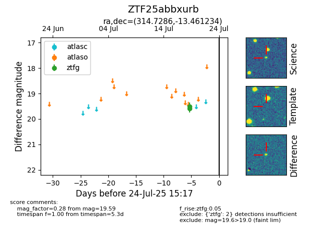

Target ZTF25abbxurb at 2025-07-24 15:17, see:
FINK: fink-portal.org/ZTF25abbxurb
Lasair: lasair-ztf.lsst.ac.uk/objects/ZTF25abbxurb
ALeRCE: alerce.online/object/ZTF25abbxurb
alt names
ZTF25abbxurb (ztf,fink)
coordinates:
equatorial (ra, dec) = (314.7286,-13.46123)
galactic (l, b) = (34.8014,-34.27285)
photometry
last ztfg=19.59
2 ztfg detections
